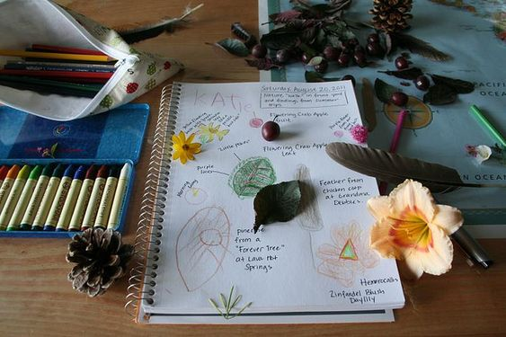

Nature
Journal

Start a Nature Journal, which your grandchild can use to
record what they see in Nature through the year. An exercise
book is fine, but a spiral bound book which will lie flat is
even better. A lined page will help keep writing horizontal
and even, but detracts slightly from drawings. Take your pick.
If you go for lines then faint ones are best.
It is best if entries in the journal start with a date, so
that you can look back with the child to see what happened at
different times through the year. When did it snow? When did
the first snowdrops appear? When was the first sign of birds
nesting? When did you see a rainbow? Did you spot something
interesting on a trip out? Be sure to mention where you went.
Drawings should be encouraged. These can be done on location
(tricky unless you can set up a table), or items can be
brought indoors to be drawn, or you could take a photograph
and they could be drawn from that. You could also print out a
photograph and stick that in, but this takes away some of the
fun and individuality. Other things could be stuck in the
book, though - leaves and petals, for example. Creatures are
best avoided for this purpose!
It is good to personalise the cover of the book. For example
it could be covered in paper in time-honoured fashion and the
sleeve can then be decorated with drawings or prints. Look for
ideas in the Art and craft section.
Adding items to the Nature Journal is a good rainy day
activity, and you can be sure that they will get a lot of
pleasure out of looking back through the book when they are
older.